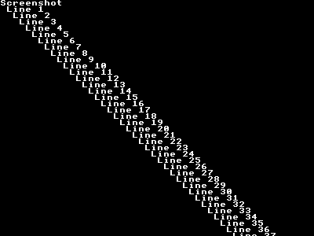

screenshot¶
Naturally, you need to share your amazing Gameduino screenshots with the world at the highest possible quality.
No problem - the hardware has a built-in screenshot system. To use it, add a line like this in your code:
Serial.begin(1000000);
GD.screenshot(0);
here is the whole sketch:
This will dump an image of the current screen to the host computer. Meanwhile on the host, have this Python script running on the Arduino’s serial connection, as described in Arduino and Python:
Launch your sketch, then run the script to collect the image from the serial line:
$ python screenshot.py /dev/ttyUSB0
listening for screenshot on /dev/ttyUSB0
captured screenshot to screenshot00000.png
the file screenshot00000.png will contain the 400x300 image from the Gameduino screen. Dumping a screenshot over USB takes about 3 seconds. You can create movies one frame at a time by giving incrementing numbers to GD::screenshot().
How does this all work? The Gameduino has a one-line RAM that captures the pixels sent to the video stream. Using the SCREENSHOT_Y register and SCREENSHOT RAM, the Arduino reads these pixels and sends them over the serial line. This is what GD::screenshot() does. A small script on the host computer reconstructs the screen image and saves it.
Last modified $Date: 2011-05-13 11:32:42 -0700 (Fri, 13 May 2011) $